- / -
EMSC3025/6025: Remote Sensing of Water Resources
Dr. Sia Ghelichkhan
- / -
Evaporation
EMSC3025/6025
Dr. Sia Ghelichkhan
Objectives
By the end of this lecture, you should be able to:
- Define evaporation and its role in the water cycle.
- Differentiate between open water, potential, and actual evaporation.
- Understand transpiration and evapotranspiration.
- Identify key controls: energy, water availability, and vapour pressure deficit.
- Recognise methods to measure and estimate evaporation.
Evaporation
Definition
Transfer of liquid water into gaseous state into the atmosphere
evaporation’s importance is mainly affected by two factors:
The amount of available energy
Available water
Both of these are modulated by climate. Think of cases where evaporation might not be as important:
Humid climate in winter: much water but limited energy
Arid climate in dry season: much energy but limited water
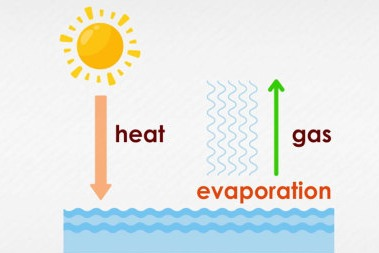
Different Definitions of Evaporation
Evaporation
- Open water Evaporation,
E_O : Evaporation above a body of water such as lakes, streams, oceans. As can be see in global water cycle figure, largest source of evaporation. - Potential Evaporation,
E_{pt} : Amount of evaporation above land if there was unlimited water. - Total Evaporation,
B_t : This is the actual evaporation. Wet seasons:E_t \approx E_{pt}
- We are mostly interested in
E_O andE_t , butE_{pt} gives us a good indicator of whatE_t might be. - Fig. 2 → Global Water Cycle,
E_0 dominates the global component of evaporation

flowchart TD
TOP([Evaporation]) --> BOTTOMRIGHT([Transpiration Related to Plants])
TOP([Evaporation]) --> BOTTOMLEFT([From Soil Matrix itself])Transpiration is the result of photosynthesis and respiration in the plants. It is controlled by:
… the ability of the leafs in opening or closing of the leafs stomata in response to vapour pressure difference.
… further by amount of water, the solid, the ability of plants to transfer water to the leaves.
We are considering evaporation as a negative source. But water lost, is just transferred to the atmosphere. A meteorologist would consider evaporation as a positive source and dewafll as a negative one.
Transpiration, and bit of fun with TSA
Understanding Transpiration
Effect on Local Weather:
- Increases heat index: feels hotter with added humidity.
- High humidity can stress humans by hindering sweat evaporation.
- Night time temperatures stay warmer due to high humidity.
Seasonal and Regional Impact:
- Most impactful during hot summer months.
- Affects areas near agricultural hubs like:
- cornfields → corn sweat
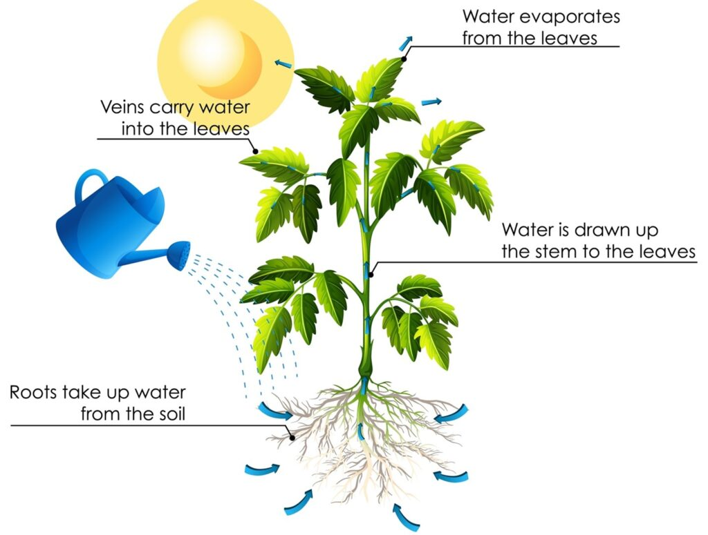
Corn Sweat:
A common phenomenon in summer in US midwest
- Millions of acres of cornfields add moisture to the air.
- One acre can release 3,000-4,000 gallons of water per day.
- Iowa’s cornfields could add 40.5 billion gallons of water daily.
Evaporation as a process
Dalton (1766-1844): The English physicist was the first to recognise the relationship between wind, air dryness, and evaporation
Formula:
Where:
E — Evaporation rate.e_x — Vapour pressure at the water surface.e_a — Vapour pressure of the surrounding air.C — Empirical constant (depends on wind, temperature, etc.).
Key Idea: Evaporation increases with the difference in vapour pressure between the water surface and the air.
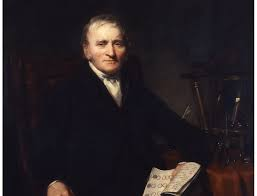
flowchart TD
a(available energy)
b(available water)
c(capacity of air for water)Available Energy
Main source of energy is from the sun. Sun’s radiation is filtered by the clouds, water vapour and absorbed by trees and tall buildings.
Q^{\ast} : net radiationQ_S : Sun’s direct radiation (Short wave), heat we feel as warmthQ_L : Latent heat due to change in phase.Q_L < 0 when Water -→ Gas,Q_L > 0 when Gas -→ Water.Q_G : Energy absorbed and released from the soil.
Two other sources of energy that might become important:
In urban settings, energy released from buildings in cold winters. From organic sources of energy.
Advective heat: As introduced in introduction
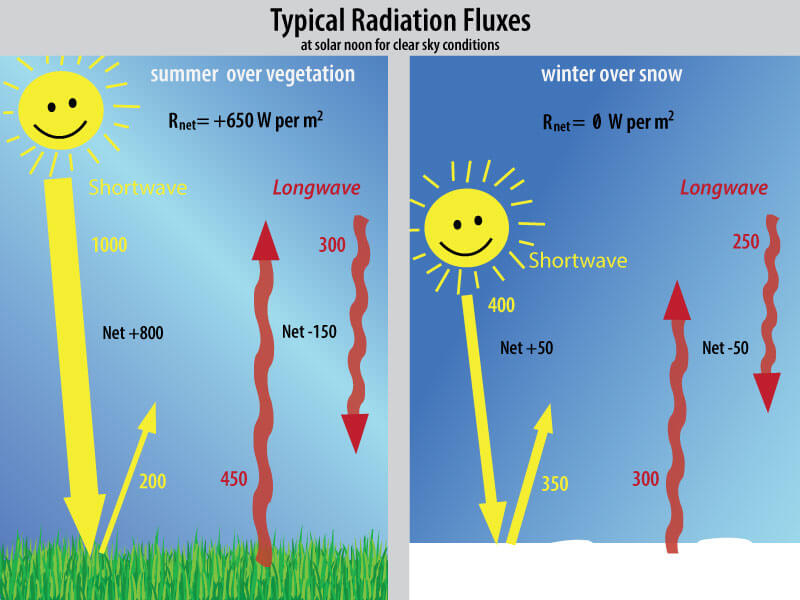
Water supply and evaporation
- Over the oceans, water supply is effectively unlimited, making evaporation a major component of the hydrological cycle.
- On land, water availability varies:
- Open water evaporation (
E_o ) occurs from lakes, rivers, ponds. - Soil evaporation is more complex and limited by water availability.
- Open water evaporation (
- In soils:
- Water evaporates from the near surface
- A moisture gradient forms, pulling water upward
- This upward movement must overcome gravity and soil capillarity
- Plants also draw water to the surface via osmosis in their roots.
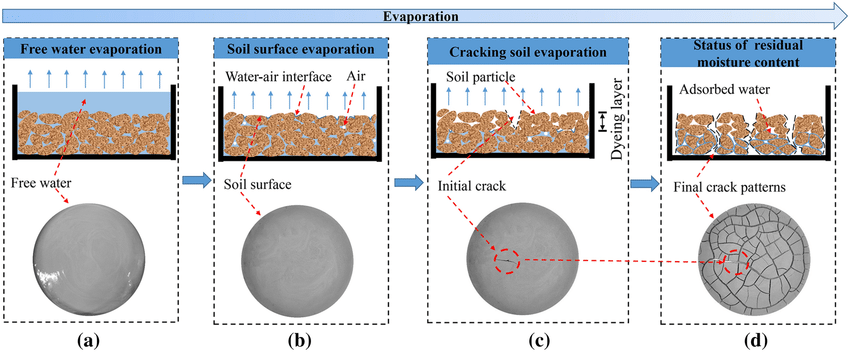
Water supplyThe receiving atmosphere
- Once the water is evaporated, it diffuses into the atmosphere.
- Evaporation depends on the difference between:
e_s : saturated vapour pressuree_a : actual vapour pressure
- The difference
(e_s - e_a) is the vapour pressure deficit (vpd) or saturation deficit. - Higher VPD → higher potential for evaporation
- Relative humidity is the ratio
e_a / e_s - Note that mixing is very important to provide more capacity for evaporation.
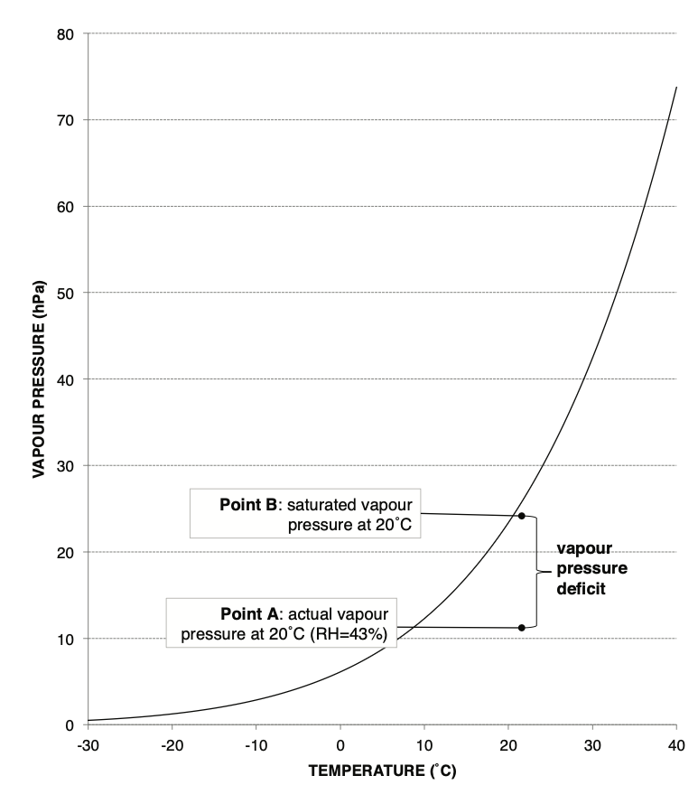
Evaporation should be looked at in the context of the environment.
Open-water versus soil evaporation
Open water evaporation
- The simplest case: evaporation from lakes, rivers, reservoirs
- Controlled by:
- Water body properties (temp, salinity, depth)
- Atmosphere above (vpd and mixing)
- Often overestimates evaporation in catchments due to unlimited water supply
Soil evaporation
- Same process as open water, but:
- Water supply is limited
- Water must move up through the soil
- Influenced by:
- Soil saturation and capillarity
- Surface conditions (e.g. bare vs vegetated)
Transpiration and total evaporation
- Transpiration = water loss via stomata in leaves
- Plants respond to:
- Water availability
- VPD (they close stomata under stress)
- Evapotranspiration (ET) combines:
- Soil evaporation
- Transpiration
- Canopy interception loss
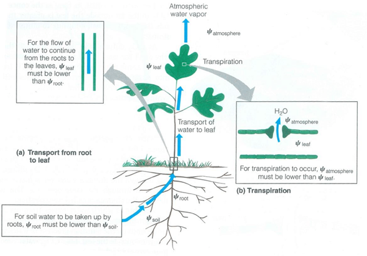
Transpiration and total evaporation
| Component | Puruki (Central North Island, NZ)(% of annual rainfall) | Balmoral (Central South Island, NZ)(% of annual rainfall) |
|---|---|---|
| Annual rainfall | 1,405 mm | 870 mm |
| Annual interception loss | 370 mm (26%) | 220 mm (25%) |
| Annual transpiration | 705 mm (50%) | 255 mm (29%) |
| Annual soil evaporation | 95 mm (7%) | 210 mm (24%) |
| Remainder (runoff + percolation) | 235 mm (17%) | 185 mm (21%) |
The relative importance of each component depends on the climate, degree of vegetation cover.
How do we measure evaporation?
Measuring evaporation is hard
- No gauge can directly capture evaporated vapour
- Many methods estimate evaporation indirectly via:
- Energy balance
- Water balance
- Micro-meteorological measurements
- All methods make assumptions about fluxes and gradients
Direct micro-meteorological methods
- Require high-frequency measurements, since wind speed, humidity, and temperature are highly variable
- Three techniques:
- Eddy covariance
- Aerodynamic profile
- Bowen ratio
Direct: Eddy covariance
- Eddy Covariance (Turbulence) Method
- Principle: Directly measures turbulent fluxes by computing the covariance between vertical wind velocity and scalar quantities (e.g., temperature or vapor).
- Data Needs: High-frequency 3D wind and scalar measurements.
- Assumptions: Stationarity, homogeneous surface.
- Pros: Most accurate and direct method; no need for gradient assumptions.
- Cons: Expensive; complex instruments and processing; sensitive to sensor alignment, data gaps, and surface heterogeneity.
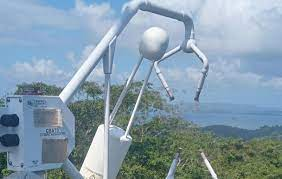
Direct: Aerodynamic profile (Flux-Gradient)
- Aerodynamic Profiling (Flux-Gradient) Method
- Principle: Relates vertical gradients of wind, temperature, and humidity to turbulent fluxes.
- Key Inputs: Profiles of wind speed, temperature, humidity; roughness length; stability corrections.
- Pros: Useful in many micrometeorological settings.
- Cons: Requires accurate profile data; sensitive to stability corrections and roughness parameters.
Direct: Bowen ratio
- Bowen Ratio Method
- Principle: Uses measured temperature and humidity gradients between two heights to infer latent and sensible heat fluxes.
- Key Variable: Bowen ratio
\beta = H/LE , whereH is sensible andLE is latent heat flux. - Data Needs: Two levels of temperature and humidity, net radiation, ground heat flux.
with
- Assumes steady state, negligible horizontal advection, similarity of turbulent transfer of heat and moisture.
Indirect: water balance methods
Evaporation can be inferred from the water balance:
E = \Delta S - P Use a pan or lysimeter where:
\Delta S = change in water volumeP = precipitation
Good for controlled setups, less reliable in field conditions
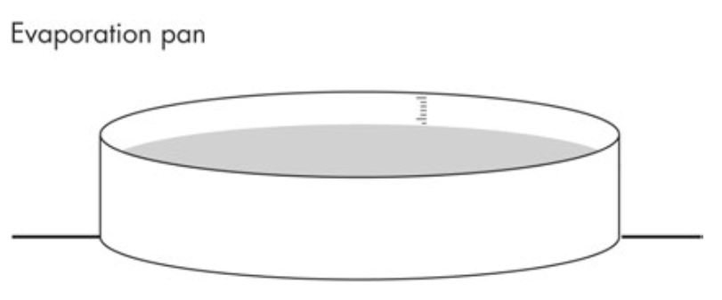
Evaporation pans
- Large containers filled with water, exposed to the atmosphere
- Record water loss over time
- Limitations:
- Overestimate actual
E - Suffer from edge effect and radiation bias
- Used mostly for open water or reservoirs
- Overestimate actual
Lysimeters
Measure
E over vegetated surfacesMimic soil and vegetation — allow percolation
Use:
E = \Delta S - P - Q where
Q = drainageCan be weighed or monitored using load cells
Most accurate field method, but:
- Small scale
- Expensive and complex
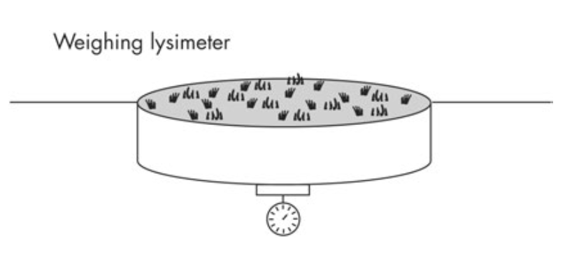
Surrogate methods
- Surrogate methods are indirect methods that estimate evaporation based on other variables.
- They focus on climotological variables that are understood to affect evaporation.
flowchart LR A[Surrogate Methods] --> B[Thornthwaite] A[Surrogate Methods] --> C[Penman] A[Surrogate Methods] --> D[Penman-Monteith]
Thornthwaite
- A empirical method that estimates potential evaporation based on average temperature temperature.
- Sensible as we know temperature is a proxy for the available energy.
- A monthly heat index (i) for a region
- Annual heat index (I) is the sum of the monthly heat indices.
- Potential evaporation (E_p) is then given by:
b accounts for unequal day length between months.a is calibrated as a cubic function of the heat index.
A raw estimate only on temperature.
It can only work on a monthly scale.
Calibrated for a specific region. For regions with high potential evaporation, underestimates evaporation.
Penman for Open Water Evaporation
- Combination of energy balance and vapour pressure deficit.
- It is a very complex model, but it is very accurate (10 days to daily).
where an empirical relationship states that:
with
Requires observations of temperature, wind speed, vapour pressure and net radiation, and provides the rate of evaporation in mm / day. Ignores soil heat flux, and that the vapour pressure deficit is the only limiting factor.
Simplifications to Penman
- Several attempts have been made to simplify the Penman equation for widespread use.
- Priestly and Taylor (1972) derived a simplified Penman formula for large-scale estimation of evaporation, where large-scale advection is not important, and only accounted for through sensible heat.
Q_G is the soil heat flux term\alpha is the Priestly–Taylor parameter, approximates the sensible heat transfer function, estimated by Priestly and Taylor (1972) to be 1.26 for saturated land surfaces, oceans, and lakes.- This adaptation is important for regional scale evapotranspiration assessment using satellite remote sensing.
Relationship between Actual and Potential Evaporation
- Without stomatal control (e.g., pastures), the relationship between actual evaporation (
E_t ) and potential evaporation (P_E ) is primarily driven by water availability. - Water availability can be estimated from soil moisture content.
- No units on the x-axis and two different curves (depends on soil and plant types).
- This simple relationship is useful for soil water budgeting models (e.g., Davie et al. 2001) but not for precise modeling.
- The relationship is not linear, and it is not a simple function of soil moisture.
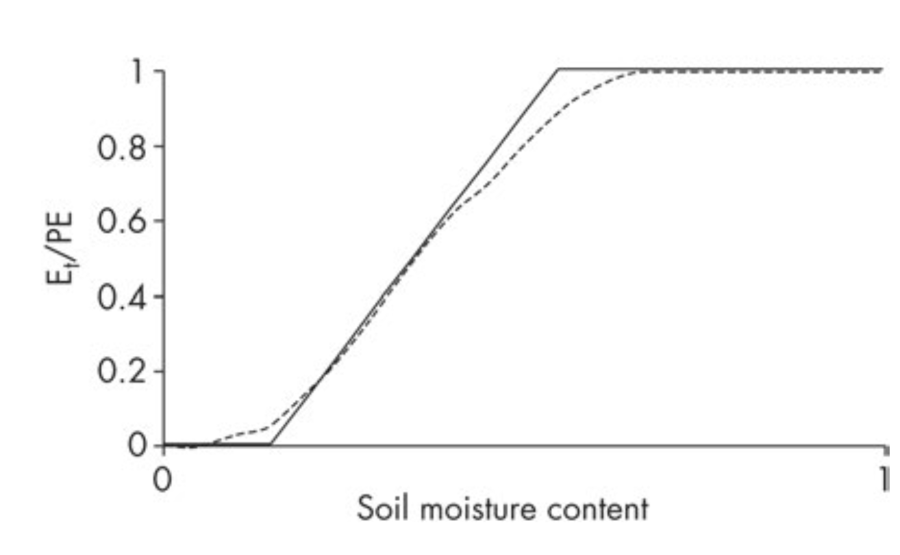
Influence of Vegetation on Evaporation
- In vegetation types with stomatal control (e.g., coniferous forests), evaporation is influenced by both soil moisture and vapour pressure deficit (VPD).
- Figure → shows a time series of soil moisture, transpiration, and VPD for Pinus radiata in New Zealand.
- Transpiration was measured using sap-flow meters, soil moisture with a neutron probe, and VPD from a meteorological station.
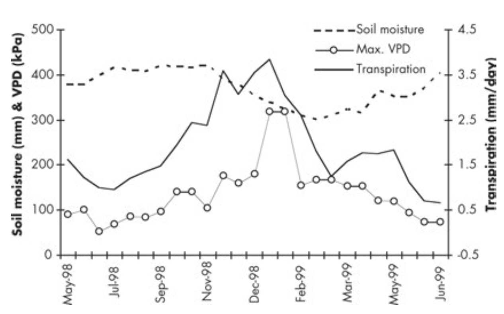
Influence of Vegetation on Evaporation
- At the start of summer (Oct-Nov 1998), high soil moisture leads to a rapid increase in transpiration.
- Transpiration plateaus despite increasing VPD, indicating stomatal control.
- From Jan 1999, transpiration drops, initially matching a drop in VPD, but continues to decrease due to soil moisture limitations.
- Figure 13. → illustrates the complex interaction between evaporation, soil moisture, and atmospheric conditions.
Summary
So here we covered that:
- Evaporation transfers water to the atmosphere, driven by energy and water availability.
- Types include open water (
E_o ), potential (E_{pt} ), and actual (E_t ). - Transpiration from plants adds to total evapotranspiration.
- VPD (vapour pressure deficit) is a key driver of evaporation.
- Measured via direct(lysimeters) and indirect (pans, water balance) methods.